CU Employee Salaries
University of Colorado system — FY 2025–26. All salaries COL-adjusted.
All Campuses

Salary by Campus — Full-Time Only
Every full-time (100% FTE) CU employee as a single dot, grouped by campus and positioned by annual base salary.
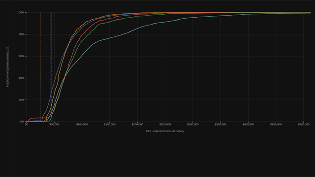
Salary Distribution by Campus
Cumulative distribution of COL-adjusted salary for each campus. Hover to compare percentiles across campuses at any salary level.

Salary by Job Family — All Campuses
Every full-time CU employee as a dot, grouped by job family with box-and-whisker overlays. All campuses pooled and COL-adjusted.

Salary by Job Family — All Campuses
Each job family as a bubble sized by system-wide headcount, positioned by median COL-adjusted salary across all campuses.

Salary by Job Family — Side by Side
Job families for each campus arranged in columns, sharing a common salary axis for cross-campus comparison.
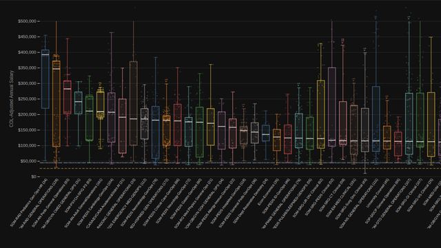
Salary by Department — All Campuses
Every full-time CU employee as a dot, grouped by department with box-and-whisker overlays. All campuses pooled and COL-adjusted. Departments with ≥ 20 FTE system-wide shown.
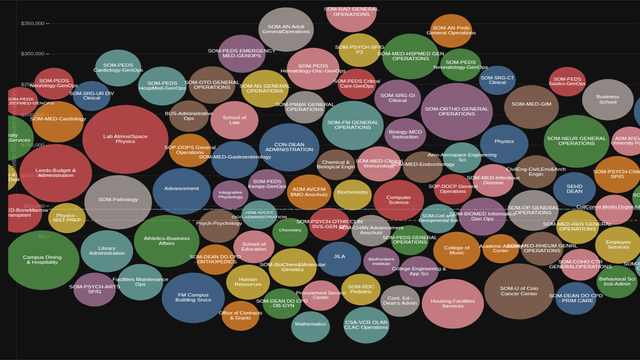
Salary by Department — All Campuses
Each department as a bubble sized by system-wide headcount, positioned by median COL-adjusted salary across all campuses.
CU Anschutz

CU Anschutz Salary by Job Family
All Anschutz Medical Campus employees broken down by job family, sorted by median COL-adjusted salary.

CU Anschutz Salary by Job Family
Each job family as a bubble sized by headcount, positioned by median salary.
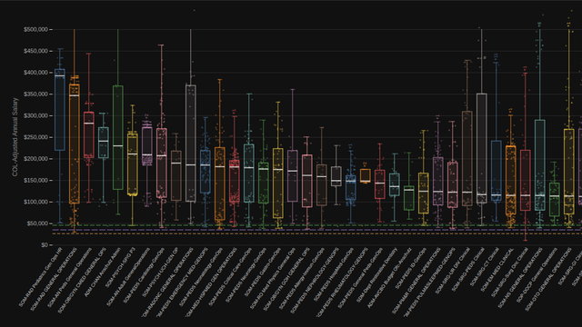
CU Anschutz Salary by Department
Anschutz departments (≥ 10 FTE) sorted by median COL-adjusted salary. Scroll to explore.
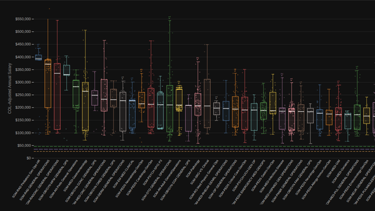
CU Anschutz Regular Faculty by Department
Regular Faculty only (≥ 5 FTE per dept), sorted by median COL-adjusted salary. Scroll to explore.
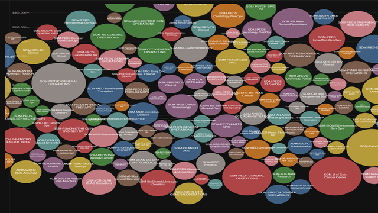
CU Anschutz Salary by Department
Each Anschutz department as a bubble sized by headcount, positioned by median COL-adjusted salary.
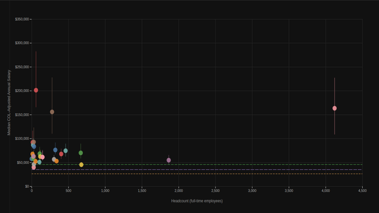
CU Anschutz Salary vs. Job Family Size
Does a larger department mean higher pay? Each dot is a job family; X = headcount, Y = median salary.
CU Boulder

CU Boulder Salary by Job Family
All Boulder employees broken down by job family, sorted by median COL-adjusted salary.
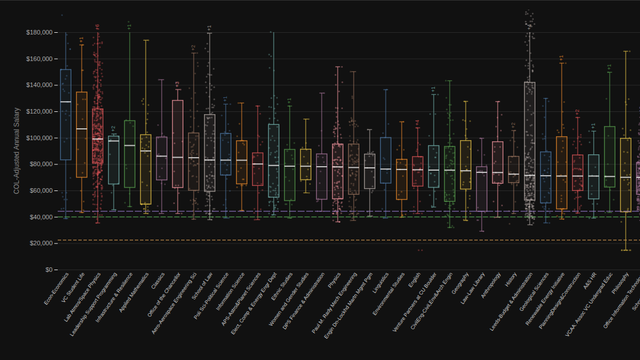
CU Boulder Salary by Department
Boulder departments (≥ 10 FTE) sorted by median COL-adjusted salary. Scroll to explore.
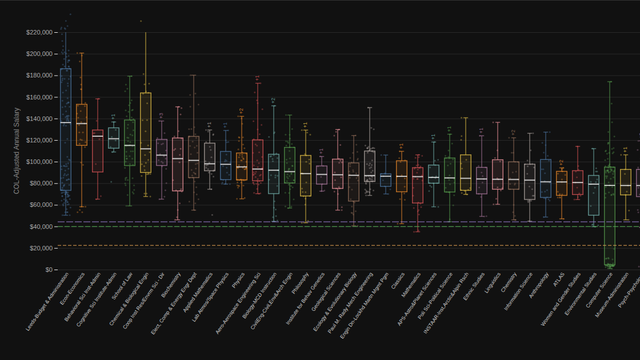
CU Boulder Regular Faculty by Department
Regular Faculty only (≥ 5 FTE per dept), sorted by median COL-adjusted salary. Scroll to explore.

CU Boulder Salary by Job Family
Each job family as a bubble sized by headcount, positioned by median salary.
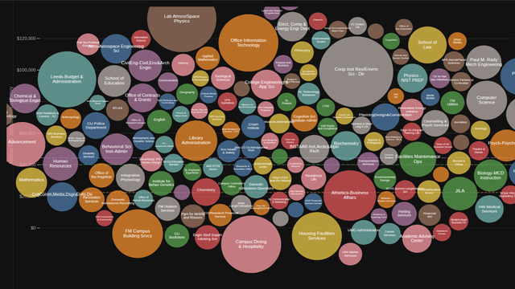
CU Boulder Salary by Department
Each Boulder department as a bubble sized by headcount, positioned by median COL-adjusted salary.
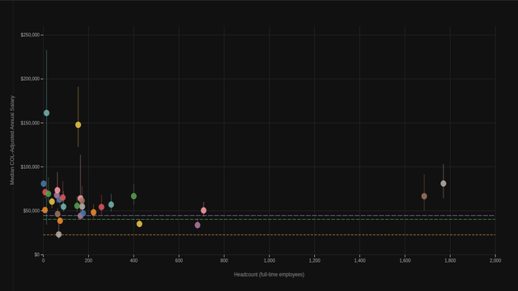
CU Boulder Salary vs. Job Family Size
Does a larger department mean higher pay? Each dot is a job family; X = headcount, Y = median salary.
CU Colorado Springs

CU Colorado Springs Salary by Job Family
All UCCS employees broken down by job family, sorted by median COL-adjusted salary.

CU Colorado Springs Salary by Job Family
Each job family as a bubble sized by headcount, positioned by median salary.
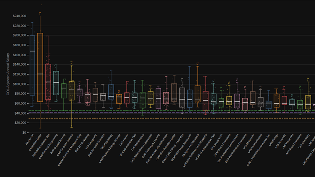
CU Colorado Springs Salary by Department
UCCS departments (≥ 10 FTE) sorted by median COL-adjusted salary. Scroll to explore.
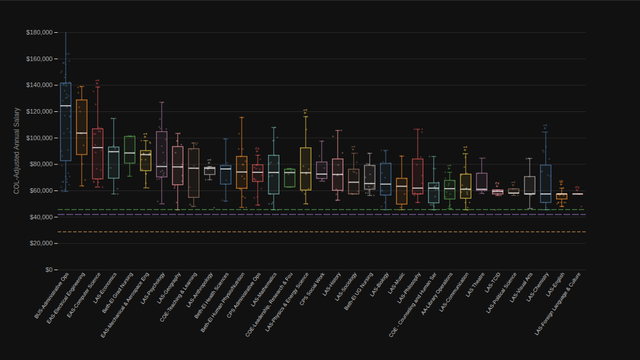
CU Colorado Springs Regular Faculty by Department
Regular Faculty only (≥ 5 FTE per dept), sorted by median COL-adjusted salary. Scroll to explore.
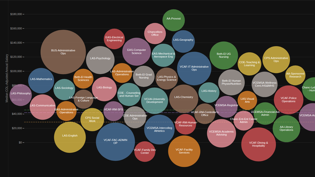
CU Colorado Springs Salary by Department
Each UCCS department as a bubble sized by headcount, positioned by median COL-adjusted salary.
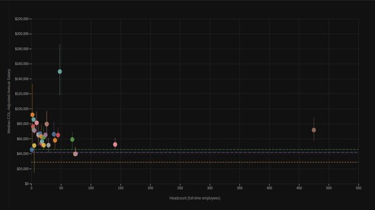
CU Colorado Springs Salary vs. Job Family Size
Does a larger department mean higher pay? Each dot is a job family; X = headcount, Y = median salary.
CU Denver

CU Denver Salary by Job Family
All Denver employees broken down by job family, sorted by median COL-adjusted salary.

CU Denver Salary by Job Family
Each job family as a bubble sized by headcount, positioned by median salary.
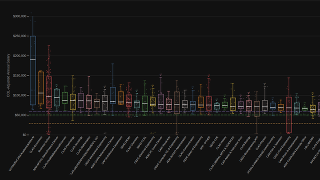
CU Denver Salary by Department
Denver departments (≥ 10 FTE) sorted by median COL-adjusted salary. Scroll to explore.
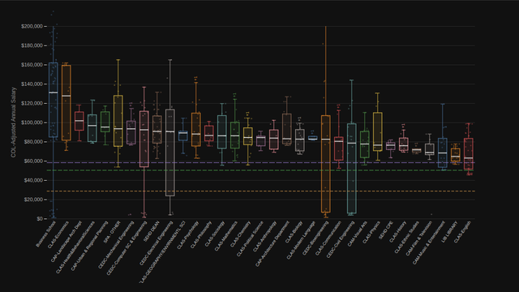
CU Denver Regular Faculty by Department
Regular Faculty only (≥ 5 FTE per dept), sorted by median COL-adjusted salary. Scroll to explore.
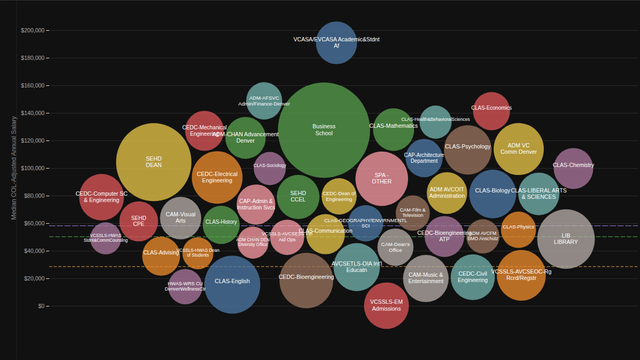
CU Denver Salary by Department
Each Denver department as a bubble sized by headcount, positioned by median COL-adjusted salary.
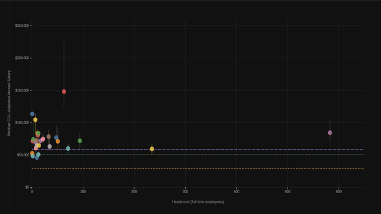
CU Denver Salary vs. Job Family Size
Does a larger department mean higher pay? Each dot is a job family; X = headcount, Y = median salary.
System Administration

System Administration Salary by Job Family
All System Administration employees broken down by job family, sorted by median COL-adjusted salary.

System Administration Salary by Job Family
Each job family as a bubble sized by headcount, positioned by median salary.
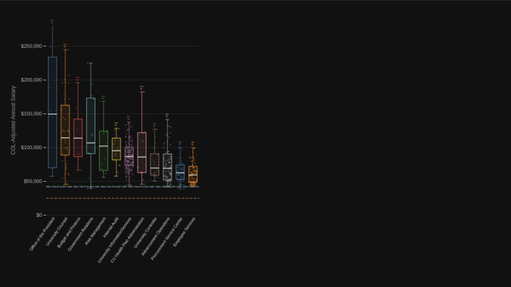
System Administration Salary by Department
System Administration departments (≥ 10 FTE) sorted by median COL-adjusted salary. Scroll to explore.
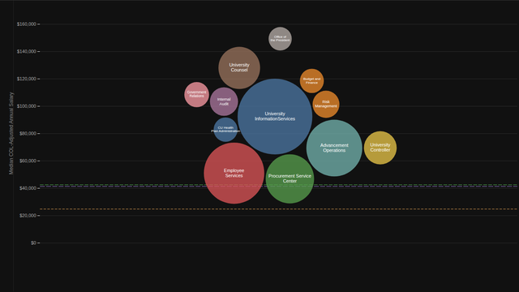
System Administration Salary by Department
Each System Administration department as a bubble sized by headcount, positioned by median COL-adjusted salary.
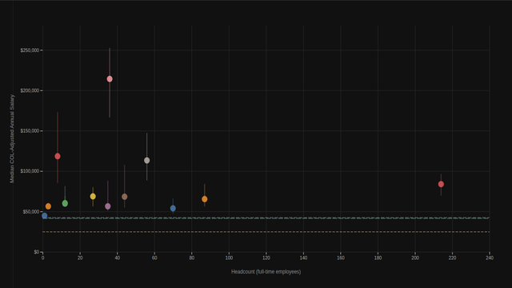
System Administration Salary vs. Job Family Size
Does a larger department mean higher pay? Each dot is a job family; X = headcount, Y = median salary.